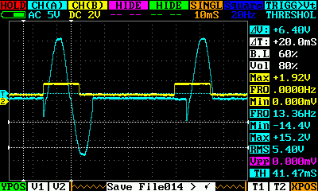
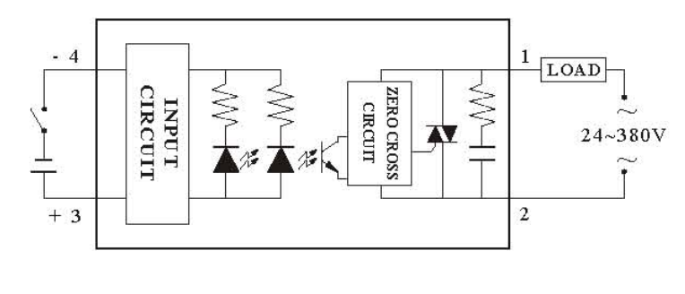

As the thread "Solar Energy Managment" is getting so long now, I've started a new thread detailing how I'm building a proportional, burst fire SSR controlled surplus energy controller (aka hot water controller!!)
The code for this project is on GITHUB... https://github.com/stuartpittaway/VariableTimeBaseSSR
I'm using a zero crossing detector circuit, powered from a AC-AC (9v) adapter, same as used with emonTX to identify when the mains power is zero and then fire an interrupt.
I've recently brought a new digital scope (toy!), so heres the picture of what's happening....

The blue trace is the mains AC (via 9v adapter). The yellow pulse is the zero cross circuit before it passes through an optoisolator. The purple is the output after the optoisolator.
The purple pulses above are fed into Arduino pin 3 (interrupt 1) and occur twice per cycle, so UK mains at 50hz produces 100 pulses per second.
Using this pulse I'm switching on/off a zero crossing SSR (cheap one from ebay)

This yellow trace shows the output of the SSR (mains switching taken through a very poor quality power supply so I didn't break the scope)
The green pulses are the request to switch the SSR on, this is at 50% power, 2 off cycles, followed by 2 on cycles.
You can see from the timing, that the request to switch on the SSR occurs almost at zero, but this appears to be too late to get the SSR to switch on, which seems to happen half cycle afterwards (at the next zero cross).
I don't this is a problem, it just means the SSR is out by half cycle, but the frequency is perfectly in sync.
I've also tried triggering the interrupt on a failling edge of the 100Hz pulse (purple line) and I think this may be the best answer.

Worked example..

A = zero cross detected (1) and rising pulse generated
B = falling edge of pulse, triggers interrupt
C = interrupt code asks SSR to "switch on"
D = next zero cross occurs (2), SSR switches on (E)
F = 2nd falling edge of zero cross and SSR asked to switch off
G = next zero cross occurs (3), SSR switches off
You can see that the code switches on the SSR at (C) but it wont energise until the next zero cross at D, once energised, current flows E + G
I need to get a second AC-AC adapter so I can measure this properly!
Re: Diverting power from Solar PV to a heater (immersion controller)
Theres no reason why this circuit can be used for other resistive loads, such as oil filled radiators - perhaps heating a conservatory in winter sunshine?
Jacuzzi/Spa heater perhaps ?
Re: Diverting power from Solar PV to a heater (immersion controller)
... or a storage heater, the output of which can be opened up in the evening after being heated during the day.
Re: Diverting power from Solar PV to a heater (immersion controller)
It would be a nice touch to make sure you load positive and negative half-cycles in equal numbers, so that you don't load the PV inverter with D.C. I've no idea whether it will object to a small amount of D.C., but I'm sure it will be happier without it.
Re: Diverting power from Solar PV to a heater (immersion controller)
I see there are DC immersion heaters available also, that may also be an option
edit: for example one like this: http://www.ebay.co.uk/itm/ws/eBayISAPI.dll?ViewItem&item=180296507747&clk_rvr_id=344090125608#ht_4702wt_1270
you can hook up several of them since they vary in wattage according to voltage, there is a table at the end
Re: Diverting power from Solar PV to a heater (immersion controller)
It's great to see progress being made on this topic. Have you thought about using a triac instead of a SSR? A triac will automatically switch of at the zero crossing, it's just a matter of triggering it to switch on at a zero crossing.
One of the ideas I had was to use small opto isolated triac with built in zero-crossing detection to fire a larger power triac. An Arduino could be then used to fire the small opto-isolated zero-crossing detection triac at various speeds/firing patters.
I did a quick test ((using the same toy scope!) with the TLP3042 opto-isolated triac with built in zero-crossing and it seemed to work. The yellow line is a digital pulse from the Arduino and the blue line is the output from the triac. I used a 9V 50Hz AC signal to simulate mains power:

This is what the basic circuit would look like accept the MOC3021 would be replaced with a opto isolated triac with built in zero crossing (there are loads to choose from) and the transistor would be replaced with an Arduino:
BTA26-600B could be a suitable power triac. This circuit could potentially be quite cheap to build with the two triac units costing about £3.50 in total.
I'm not sure if this approach is a good one, I would be interested to hear your throughts. It was just an interesting idea to explore but not one that I've done any work on lately. Working on emonTx SMT is taking up most of my time at the moment!
Re: Diverting power from Solar PV to a heater (immersion controller)
Er..... Glyn, what's inside a SSR (Solid State Relay) ? ? ! ! ! (The clue is in the name).
Re: Diverting power from Solar PV to a heater (immersion controller)
Someone has pointed out that using the DC direct from the solar panels means that it is not metered, hence you don't get paid for it. A good idea - I had it a while ago ;-) - but until the legislation catches up with what might well be best engineering practice (because you avoid the inverter losses), I think for financial reasons you need to stick with loading the inverter output.
Re: Diverting power from Solar PV to a heater (immersion controller)
Robert,
According to Wikipedia, a solid-state relay includes an opto-isolator whereas a triac doesn't. Their corresponding articles read quite differently.
Or am I missing something?
Re: Diverting power from Solar PV to a heater (immersion controller)
I can see the benefits in striving for zero-cross switching, but in burst fire mode we may only be dealing with a small number of mains cycles, therefore if we time it wrongly and trigger just after a zero-cross, we will lose almost 1/2 cycle whilst the next zero-cross arrives, which would affect accuracy.
Couldn't the burst be more accurately controlled by ignoring the zero-cross, and fire the Triac on a strict timing routine? Would ignoring the zero-cross really cause so many problems when switching a purely resistive load.
Paul
Re: Diverting power from Solar PV to a heater (immersion controller)
calypso_rae:
Quite possibly you are: I've met solid state relays with reed relays inside for galvanic isolation between the control terminals and the load. I also seem to remember coming across one without galvanic isolation, but a long time ago. The point of my comment was the output element(s) of an SSR designed for a.c. and switching at the zero crossing will probably be a triac or a pair of back-to-back thyristors. An SSR offering zero crossing switching thus removes the need for you to take account of that in your design, whereas a bare triac will turn on on demand - and unless you can accurately fire it very close to the zero crossing it will require filtering and possibly commutation components around it. Both will inherently switch off when the current falls below the holding value for a sufficient time provided the command signal has been removed.
Optically fired thyristors also exist - yes, the "gate" connection is an optical fibre. These are very useful for high voltage applications, not needing a trigger transformer with near-impossible isolation requirements. I doubt that anyone has made an optically fired triac (as distinct from a triac incorporating an opto-coupler).
[Edit}
See this Omron SSR http://www.farnell.com/datasheets/1470863.pdf I think you'll find on page 5 a pair of back-back thyristors or a triac, depending on the load current capability.
Re: Diverting power from Solar PV to a heater (immersion controller)
Robert, there is clearly an element of debate of the differences between a SSR and a Triac, but there is no need for sarcasm towards our host!
If you you wish to make a point, then make it, but please don't resort to rudeness.
Paul
Re: Diverting power from Solar PV to a heater (immersion controller)
No offense taken. I was under the impression the SSR's were mainly DC mosfet based. Looking through farnell they seem to come in a range to different types. Some mosfet, some with zero-crossing and some without. My point was that a correctly rated ssr seems to cost in the region of £15-£20 where the raw components to do the same job can be bought for about £3.50.
Although I can see the value in using a properly tested unit for mains switching, safer and one less thing to worry about!
Re: Diverting power from Solar PV to a heater (immersion controller)
Currently I'm happy with the circuit I've got, it works at 1% resolution (could be adapted to reduce this to 0.5%) and fires really nicely and evenly all the way up to 100% power. The circuit I've built in effect does zero crossing twice, once on the arduino circuit and again on the SSR.
I don't think this is actually a problem, because I'm not losing any power/cycles, simply the SSR is half a cycle behind the arduino. They are both in sync.
Additionally, I agree that the triac might be a good option, but I was hoping to design a safe(ish) circuit for a generic module for O.E.M, minimum mains wiring. The SSR I'm using also cost less than £6, there are much cheaper ones about as well...
For instance, £3.50...
http://www.ebay.co.uk/itm/Control-Solid-State-Relay-SSR-40DA-40A-24-380V...
http://www.ebay.co.uk/itm/SSR-25A-Solid-State-Relay-24-380V-AC-Temperatu...
Re: Diverting power from Solar PV to a heater (immersion controller)
I've come across a "3800W SCR Voltage Regulator Dimming Light Speed Control" on ebay that'd appear to achieve the same for a fraction of the price of, say, a site transformer - would such a device be sufficient for reducing a 3kw immersion energy usage down to half or lower?
Re: Diverting power from Solar PV to a heater (immersion controller)
I've updated the code to include a new burst firing table, so it now works on 0.5% steps, so for a 3kw heater, thats 15W resolution.
I've found an old ac transformer in a nokia mobile phone charger, so if I get brave tonight, I'll put that on the scope and test it out !
Re: Diverting power from Solar PV to a heater (immersion controller)
I did start out doing burst fire against an SSR and ignored the timings/zero cross. It works, but its difficult to maintain an accurate power output level, over time the firing drifts out and the power increases/decreases dramatically.
Re: Diverting power from Solar PV to a heater (immersion controller)
Looks like firing whole AC cycles rather than the half cycles I'm currently doing will prevent DC from being generated and passed into the heating elements, increasing their life expectancy!
Bit more background reading...
http://instrumentation-central.com/SCRPowerControls/ssrz_series.pdf
http://www.watlow.com/downloads/en/whitepapers/burst%20fire%20output.pdf
http://www.scribd.com/nealmalm/d/51105918-SCR-power-control-Watlow#outer...
Re: Diverting power from Solar PV to a heater (immersion controller)
I'm slightly skeptical of the CE mark on SSR's from ebay, the price is very low! Although I have managed to find a manufacture website with some poorly translated datasheets which is slightly assuring: http://www.fotek.com.tw/Ecenter1.asp?class1_sn=4&class2_sn=16
http://www.fotek.com.tw/pdf/etc_206.pdf
The datasheet shows that they do indeed contain a traic with optical firing:

Re: Diverting power from Solar PV to a heater (immersion controller)
I've recently posted some design notes on phase control of Triacs on my website :
http://www.rotwang.co.uk/projects/triac.html
What I wanted to do was to reduce the power to a load so that it only used the available excess solar power. When the solar panels are generating less than the load consumes, I thought I could reduce the power to the load using a phase controlled triac.
The problem with all these phase control systems is that it relies on defects in the supply meter design to work. If you only switch the supply on for part of the phase, although the average consumption is reduced, the peak consumption (while it is on) is exactly the same. So, if the meter correctly measures power, and modern meter should do, the load will still be importing power from the grid during the on periods.
So, these circuits may not work as intended. I want to look at using an IGBT to shop rectified mains as an alternative.
Re: Diverting power from Solar PV to a heater (immersion controller)
"these circuits may not work as intended"
That's what I suspected also, but the experiences of other users as well as my own testing has proved otherwise:
http://openenergymonitor.org/emon/node/176?page=2
You can shift a significant load back and forth across the utility meter without ever registering a consumption.
Having said this, I am still pleased that my variable transformer-based proportional solar dump load controller works as well as it does without all of the contortions that using a triac involves.
Re: Diverting power from Solar PV to a heater (immersion controller)
On the linked page above, search for "trampoline" !
Re: Diverting power from Solar PV to a heater (immersion controller)
In which case, the triac controller I presented about will probably do what most people want - provide proportional phase control to a load that can soak up excess energy.
I still have reservations about the meter design though. What they should do is multiply V * I at a high sample rate and sum any positive values. This would stop the phase control (or any other pulse width etc) from working. I suspect that meter manufacturers are only just starting to worry about people generating their own power. In the past the meter was easy as the flow was all one way. That will probably change, so any investment in hardware would be possibly short lived. We will all be forced to have new smart meters soon, which may well prevent us from doing this.
I wouldn't describe the triac control as "contortions". The circuit is simple and the software, well, its just software. The only thing my circuit is missing is a nice box and an adequate heatsink.
http://www.rotwang.co.uk/projects/triac.html
What you need in addition to this is some feedback from the generation and consumption meters, but that depends on your setup.
I was going to abandon this experiment, as I didn't have access to a modern meter to verify that the principle works. But this thread has encouraged me to continue. I don't even have an immersion heater! If someone is able to verify that a phase controlled triac will not register on a modern meter, then I will be happy to continue the experiment. Happy to discuss this offline at : solar at rotwang dot co dot uk
I need to get real time monitoring of my import meter, and that is my next stage.
Re: Diverting power from Solar PV to a heater (immersion controller)
Daveb, proportional phase-control using a triac should work fine with modern supply meters. It's really no different than having lots of lights on a dimmer circuit. Power companies can't charge the customer for parts of the cycle where no energy has been consumed.
My interest is in using entire cycles, or half cycles, to power the immersion using surplus PV energy. By switching only at zero-crossing points, all sorts of problems with EMC and buzzing etc. should be greatly reduced. This approach takes advantage of the fact that modern supply meters conveniently allow small amounts of power to flow back and forth without being recorded. Such behaviour only occurs when the customer is generating power on-site. If the meter manufacturers were to change this arrangement, i.e. to withdraw their trampoline as you have suggested, then dumping surplus PV power to a resistive load would become a whole lot more challenging.
Re: Diverting power from Solar PV to a heater (immersion controller)
Daveb,
But then the meter would only read power correctly with a resistive load. Remember that a non-unity power factor will also return power to the supply for part of the cycle (we call it circulating vars - Volt Amperes reactive).
On the contrary (only it wasn't genuine generation they were worried about). Most meters have never allowed reverse power because prior to private generation becoming widely available, reverse power was a sure sign of the customer fiddling the meter!
As I understand it, many smart meters have an optional setting (the supply companies option, that is) to allow or block reverse power.
And some large filter components to reduce the interference that you will generate.
Re: Diverting power from Solar PV to a heater (immersion controller)
Hi calypso_rae. There is no question of being charged for parts of the cycle where no energy is being consumed. It is a problem that only occurs when you are generating power, which is largely a recent phenomena. The meter merely multiplies the instantaneous current and voltage together and integrates this over time. With old meters this is done using an electromagnetic system. With modern meters it is done electronically and in software.
The critical issue is how the integrating is done. Is the sum of V * I taken over a period and then any import (ie. net +ve) amount added to the meter reading, or are only those V * I products that are positive integrated? The meter can do this either way. It is an implementation detail. If you have no generation capability, the numbers will come out the same. It only matters when you can export as well as import.
This is complicated when you consider that the load might be an inductive one. With inductive loads the current is out of phase with the voltage. The meter shouldn't charge you when the current flows in reverse because of inductance. It should integrate. This situation looks a lot like a phase control case when you are also generating power. So perhaps the meter must always subtract any current flowing out to the grid when it integrates?
Experience shows that import and exports are simply summed, so the principle works with at least some meters. But it all depends on the design of the meter, and that may change as the utilities get more used to people generating their own power.
It also doesn't make much difference whether you talk about phase control (part cycles) or switching at zero crossing points for selected cycles, (apart from the EMC / buzzing issue you mention). The issue is the peak current drawn when the load is on. If this peak current is greater than the current supplied by your inverter, then technically you are importing power, whether it is for a part of a cycle or a half cycle. The fact this doesn't show up on your meter is down to the detail of how the meter is implemented. Both phase and cycle control have the same behaviour.
I'm going to try and summarize all this with diagrams etc and post a link here later.
Re: Diverting power from Solar PV to a heater (immersion controller)
Yes, you are right about people reversing the meter, but that is easily handled.
Good points about reactive power. I only saw your post after I'd added mine. Maybe that is the answer?
"And some large filter components to reduce the interference that you will generate"
yes, that is true. They don't have to be too large though :)
Re: Diverting power from Solar PV to a heater (immersion controller)
daveb, "The issue is the peak current drawn when the load is on. If this peak current is greater than the current supplied by your inverter, then technically you are importing power, whether it is for a part of a cycle or a half cycle. The fact this doesn't show up on your meter is down to the detail of how the meter is implemented."
Indeed so, and I was voicing precisely the same argument on this forum only a few weeks ago. However, since then, I have found by experimentation that our Landis meter has a 'power window' of around 1Wh within which no permanent records are kept of any power which flows to and fro. So if your control system stays within that region, there is no cost penalty for bouncing small amounts of energy in and out of the low impedance grid. The trampoline is freely available for anyone who wants to play!
Our system really does heat up the water by using isolated whole cycles of mains power and the supply meter is happy, as am I :)
Re: Diverting power from Solar PV to a heater (immersion controller)
Don't bother spending any time worrying about whether "smart meters" can sense reverse power (energy production rather than consumption), they all already have that capability. Unless programmed otherwise by the utility, they will treat any production as consumption and bill you for the result.
Old, mechanical meters could be run backwards unless they were "ratcheted", that is prevented mechanically from tuning backwards (these meters are actually rather rare). In the US, utility meters are socketed, that is they have a four blade connection system that is identical no matter whether the meter is right side up or upside down.
In the old days, inverting a mechanical meter would, either stop it's rotation (due to the meter needing gravity to be right side up to spin), or run backwards.
New "smart" meters can likewise be inverted in the socket, but gravity won't affect their operation. As such, the meter can not ignore "backwards" power, but must treat it as consumption so that cheaters still get the bill at the end of the month.
Actually, most "smart" meters can tell if they have been removed from a live socket and will scream bloody murder to the utility.
Consumer production of energy is more common than you might think, and meter manufacturers are competitive in creating products that utilities can use to accommodate customers who have a legitimate grid intertied system. The new meters can be configured to separately register and total that production, although the default settings is to treat it as consumption.
Re: Diverting power from Solar PV to a heater (immersion controller)
I've drawn a graph of how I think the issue can be described.
http://www.rotwang.co.uk/projects/images/phase_power_graph.png
This uses a phase control example, but it equally applicable to the whole cycle case. For simplicity I've used a 90 degree phase switch.
When the load is off, you are exporting power. This should not appear on your import. I believe it is incorrect to say 'they will treat any production as consumption and bill you for the result.' The import factor here is the direction of the current, which both old mechanical and new electronic meters will accurately measure. Neither will count exported power as imported. The net power is the sum of the instantaneous current and voltage, integrated over time. In this example, the hatched area on the left hand side of the graph, which the meter will treat as export and therefore ignore.
When the load is on, the net current flow is equal to the load current minus the generation current, assuming always that I_load > I_gen. The meter will again integrate the net current flow, multiplied by the voltage. In this case the hatched area on the right of the graph, which is a net import of energy.
The question is, does the meter add these 2 areas, one negative (export) the other positive (import)? My mechanical meter does, and clearly other people with electronic meters also say it does. calypso_rae's meter even averages over multiple cycles. This may be common behaviour. If the sum of the hatched areas is <= 0, ie. net export, the meter shouldn't register any usage.
The question of detecting fraudulent use of the meter is different. The meter simply never counts backwards. This is achieved with a ratchet in mechanical systems, and with software in electronic meters.
'the default settings is to treat it as consumption'. I suspect this can't be true. If this were the case then everyone who is a power generator would get larger bills, not smaller. The bill would be the sum of exported and imported power. I don't imagine for a minute that this is happening.
Yes, modern meters can measure import and export. My generation meter has fields in its IrDA output data, but they are turned off. I've decoded these and seen them :
http://www.rotwang.co.uk/projects/meter.html
The solid-state-relays will simply use the same switching techniques as in my triac design. 'linear' ones, will probably use phase control. It is just the same basic design in an enclosed box.
All this still leaves the question open in my mind. I think that the fact that meters have to deal with reactive loads gives a hint that they must always subtract negative currents when they integrate. This may mean that they will always work as desired. I think that is the most important contribution to this debate.
Re: Diverting power from Solar PV to a heater (immersion controller)
daveb, nice diagram and explanation. Meters could doubtless be set up to operate as you suggest, but that would cause problems with capacitive and reactive loads.
For me, the most important contribution to this debate was the realisation that energy can be bounced in & out of our supply meter without charge.
Re: Diverting power from Solar PV to a heater (immersion controller)
I seem to recollect seeing anecdotal evidence - on here I think - that the customer proved that the bill was for total power irrespective of direction, and got a meter change and a refund from the energy supplier as a result.
Re: Diverting power from Solar PV to a heater (immersion controller)
"'the default settings is to treat it as consumption'. I suspect this can't be true."
If this is what you believe to be the case, there is one very fast, easy, and convincing method of proving it one way or the other.
If you have the capability of producing and exporting energy (PV's, etc), turn off all the loads in your service, disconnect any dump load devices, and allow 1kWh+ of energy to flow back into the grid and read the results on your meter.
I can tell you unequivocally that the utility meter installed on my electric service will increment the consumption by the amount of energy fed back into the grid, and I have no reason to expect that most if not all "smart" meters are set up the same from the factory. This is the selling point that the manufacturers use to convince utilities to switch to these types of meters to begin with. That, and the fact that they sense small amounts of energy usage more accurately and are less apt to have calibration errors caused by old, creaky gears, dirt, dust, etc. If your utility is installing "smart" meters, they aren't doing it for your benefit, it's solely for theirs.
If you have entered into a net metering/tariff-feed-in agreement with your utility, then your electronic meter will be programmed to accumulate consumption and production in separate registers. Some utilities, when faced with net metering, will simply leave the old (non-ratcheted) analog meters in place and let them spin backwards when production exceeds consumption.
Re: Diverting power from Solar PV to a heater (immersion controller)
On a good day, when the water is up to temperature, our PV is still active, and the house is using minimal power:
- the LED on our supply meter glows continuously, but the numbers don't change because we are exporting;
- the LED on our generation meter pulses regularly, each one being worth approx 0.05p to me in FIT payments. But as we're often reminded on this side of the Pond, every little helps :)
- the 'fourth quartile' (blue) LED on my Arduino's 'display panel' is on, this showing that the control logic is trying as hard as it can to reduce the level of export, which it can't do because the thermostat is no longer able to draw current.
Job done. We are definitely not being charged for exported power!
Re: Diverting power from Solar PV to a heater (immersion controller)
Mr. Sharkey I suggest you get your meter changed. I'm definitely not charged for exported power.
Re: Diverting power from Solar PV to a heater (immersion controller)
Believe me, if I could get the meter changed back to the analog disc-type meter, I'd do so in a heartbeat. That way, I would have no use for a dump load -or- a controller, and I wouldn't be here bothering people with facts they don't accept.
Re: Diverting power from Solar PV to a heater (immersion controller)
If you are in the UK, then your electric company can/will/must re-program your meter for you to record exported energy properly. They won't install the disc meter!
Seems quite a few people have had this problem after installing PV, some threads about the problem here..
http://www.electriciansforums.co.uk/photovoltaic-solar-panels-green-energy-forum/
Your electric supplier is incorrectly billing you !
Re: Diverting power from Solar PV to a heater (immersion controller)
Mr Sharkey,
Please realise that, to the best of my knowledge, most modern digital meters can work whichever way the supply company sets them up - on an individual basis. So what is true for one customer - whichever country they are in - might not be true for their neighbour next door, somebody across the street or for you in a different country, but it might be true for someone a dozen houses away and someone in the next road. Only the supplier and the meter itself knows, and it looks like they aren't telling.
So what are facts for some people might not be facts in your case. It doesn't mean either of you are wrong, it is likely that you are both right. You are talking about different situations.
Re: Diverting power from Solar PV to a heater (immersion controller)
The commonly fitted Siemans S2AS-100 meters are notorious for charging customers for both import & export, and although the utility companies can re flash the firmware to overcome this error, they usually just replace the meter, and re-flash/refurbish the old meter back in the factory for re-issue.
I had one of these fitted initially, so I speak from experience!!
Paul
Re: Diverting power from Solar PV to a heater (immersion controller)
pauldreed: I had one of these fitted initially, so I speak from experience!!
Was this meter already in place before your panels were fitted, or was it fitted specifically to work alongside your panels but then failed to do so?
At the time when our PV was installed, we had a disc-type meter that went backwards when we started to export. Although I reported this on Day 1, it took Scottish Power a couple of months before they got around to fitting a digital replacement. Pity that this was in November/December rather than during the summer months!
(aside) Do power companies generally check whether the meters of their PV-equipped customers go backwards or not. It would seem in their interests to do so.
Re: Diverting power from Solar PV to a heater (immersion controller)
Yes the meter was in place before the panels were fitted. Because I had the panels fitted early winter, I wasn't aware that there was a problem until 5 or 6 months later, when we got some strong spring sunshine.
Scottish Power were really good at sorting it out though, got a really generous refund, basing average daily usage on a sunny week in May, which they applied back to the previous October!
I don't think anyone checked, neither the power company nor the Solar installer. Scottish Power didn't even check, they took my word for it and organized a meter change (although they probably have had loads of complaints).
Paul
Re: Diverting power from Solar PV to a heater (immersion controller)
My supplier at the time (nPower) was very keen to change my analogue meter as quickly as possible when I declared I had had PV fitted. I'm sure it depends on your supplier.
Regardless of the theoretical capabilities of the meter, I would be very surprised if it weren't designed to mimic the mechanical inertia of an analogue meter in at least being as "fair", otherwise customers would be billed unequally depending on what sort of meter they had.
I'm shocked that there are digital meters which charge export as import, and even more shocked that it seems some were fitted in response to PV installations. Does the LED still glow continuously when power is being exported, despite it being metered as imported power?
I'm also very interested to hear about "trampolining", as burst-firing allows much simpler and cheaper circuitry than phase control. Did you say what model of meter? Mine is a Landis and Gyr 5235A. Edit: I see this is one confirmed to "trampoline" - yippee!
Re: Diverting power from Solar PV to a heater (immersion controller)
[Responding to question about 3800W dimmer on eBay - why doesn't quoting work?]
Yes, but not without difficulty. For a start, I don't believe that heatsink is nearly big enough. It's also got no filtering so will break all the regulations for electromagnetic interference. Even if that doesn't affect you, it's still very anti-social. And it's lots of live metalwork, including, by the looks of it, the heatsink.
Re: Diverting power from Solar PV to a heater (immersion controller)
It's a format. It inserts <blockquote> tags. Like this:
<blockquote> <p>"why doesn't quoting work?]"</p> </blockquote>You need to copy and paste the text you want to quote. And put the inverted commas around it if you so desire.
(And having engineered a 3 MW DC drive, tell me about harmonics and dip! - and G5/3 as it was then)
Re: Diverting power from Solar PV to a heater (immersion controller)
eof: I'm also very interested to hear about "trampolining", as burst-firing allows much simpler and cheaper circuitry than phase control. Did you say what model of meter? Mine is a Landis and Gyr 5235A.
Trampolining - yes, it's very satisfying when an existing word can convey a new situation so succinctly. Maybe there needs to be a disambiguation page on Wikipedia to distinguish it from the Olympic alternative.
My supply meter is the same model as yours (user manual attached), so you too should be able to benefit from the bouncing bonanza :)
Re: Diverting power from Solar PV to a heater (immersion controller)
Ooh very interesting - shall read! I have now read through the other thread and see that you and friends have pretty much sewn up burst firing while my attention was elsewhere!
Pity no-one's managed to hack into the meter to get it to display with a greater resolution.
Re: Diverting power from Solar PV to a heater (immersion controller)
How much more resolution do you need?
If I want an accurate power reading at the grid connection point, I just plug the laptop into my adjacent Arduino and read it from the Serial port :)
Re: Diverting power from Solar PV to a heater (immersion controller)
The greater resolution would make it easier to see exactly how the meter responds to playing about with power flow.
Re: Diverting power from Solar PV to a heater (immersion controller)
Sure, but I think it's fair to assume that whenever the LED does anything, then the underlying energy flow will have been noted.
After a period of consumption, no charge is presumably made until the next blink occurs. If the LED goes permanently on, you've just lost up to 1Wh's worth of free energy. C'est la vie.
After a period of export, the LED going off probably means that you've been charged for 1Wh's worth of energy from the grid. While it remains on, you could of course be exporting megaJoules but the meter would ignore your generosity.
Any system which can accurately measure current at the supply point, and respond quickly to any change, should have a good chance of staying in the sweet zone between chargeable events.
Maybe it's just me, but I've found that monitoring the meter's LED while turning various loads on and off is surprisingly theraputic. The hot-air blower, with two settings and a real trigger is my favourite!
Re: Diverting power from Solar PV to a heater (immersion controller)
Yes, I agree. My "favourite" pass-time is pushing pause on the washing machine as the sun goes in and out...
Re: Diverting power from Solar PV to a heater (immersion controller)
Hi I came across this website whilst doing a research on the Arduino.
The monitor looks to be a very well engineered and documented package.
Congratulations.
I went on to look at the thread on using water heating to dump excess solar energy.
I had considered using such a system but I have finally decided to employ a combi boiler and minimise the plumbing.
However, from a technical view point I am still interested but I have reservations about the underlying principles. I have not doubt that average power input to the heater can be reduced by simple fractions times it's rated value. The zero crossing switch also reduces the potential for transient generation.
You appear to imply that if the excess energy is less than the rated demand for the heater then it can be used to equalised to the solar output.
We have to consider the performance of the system formed by the generation meter, the consumption meter and the inverter.
During the on cycle the inverter will try to furnish the rated current but will be able to furnish the maximum available for the solar conditions the shortfall will be drawn from the main clocking up the consumption meter, during off cycles the the available current will be returned to the main.
in my house this turns the old style meter backwards. The meter should have been changed for a more modern version.
I don't see how this is going to save money or use the energy more wisely unless the consumption meter is also averaging the power used or feedback across several cycles. What do the various types of meter acually do ? Has anybody tried them ?
Would somebody care to shoot this argument down or clarify the situation.
Alan
Re: Diverting power from Solar PV to a heater (immersion controller)
There has been a lot of work done on trying to understand how various meters work. You'll find the results are unfortunately scattered across many threads, but they're there. Pending someone putting together an article collating all the knowledge, all I can suggest is you read up on Calypo-rae's project and its offshoots. And do a lot of searching, unfortunately.
The basic idea is: The meters (universally) seem to record energy in 1 Wh (3600 J) packets. The controller manages energy consumption within the bounds of this packet, so that there is no nett transfer recorded. Obviously, if generation exceeds the sum of the fixed load and controlled load, the system fails and energy is exported; likewise if the uncontrolled part of the load exceeds generation, energy is imported. In between, the controller successfully manages the controlled load to achieve zero nett import/export.
Re: Diverting power from Solar PV to a heater (immersion controller)
RW: Pending someone putting together an article collating all the knowledge, all I can suggest is you read up on Calypo-rae's project and its offshoots. And do a lot of searching, unfortunately.
All of which Robert has since done, the resulting article being at http://openenergymonitor.org/emon/buildingblocks/meters :)